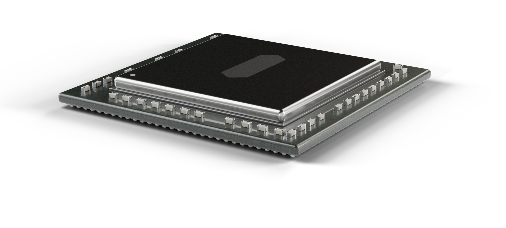

Watch a model spend energy.
A real recording. Qwen2.5 1.5B reads a prompt, then writes.
Results, running.
What we have measured.
less energy per token when serving eight requests at once.
cheaper to read a prompt token than to write an answer token.
the true energy cost of full precision over 4-bit.
Three machines. One 7B token.
Apple M5 Pro
24 GB unified memory
RTX 5070 Ti Laptop GPU
12 GB GDDR7
Ryzen AI Max+ 395
128 GB unified memory
Chip energy, Qwen2.5 7B Q4_0. Each chip measured at its own boundary.
Small models. One job each.
Trace
Draft models that predict a larger model, to make it faster and cheaper.
v0 measured · v1 data buildingLattice
Models that keep their answers at 3 bits or fewer per weight.
Baseline runningKinetic
A small model shaped by what each part costs in energy.
PlannedLatest research.
All 19 notesPer correct answer, how a model is served matters as much as its size
Measured per correct answer, a 7B serving eight requests beats a 1.5B serving one, on two machines. Serving matters as much as size.
Reading the prompt: what prefill costs, and when it dominates
Reading the prompt: a prompt token costs about 40 times less than a generated one, yet at an 8000-token prompt prefill is 40% of a request's energy. Caching the prefix saves exactly that.
The 8-bit cache does not win even when it fits an extra sequence
A prediction that failed: at 65536 tokens an 8-bit cache fits a third sequence where f16 fits two, and still costs 1.58 times as much. The context long enough to force the batch down also erases what batching saves.